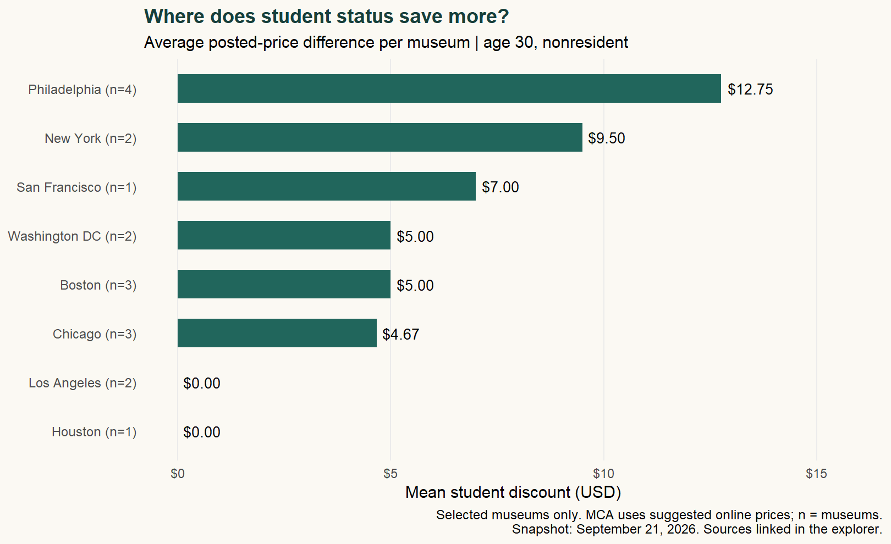
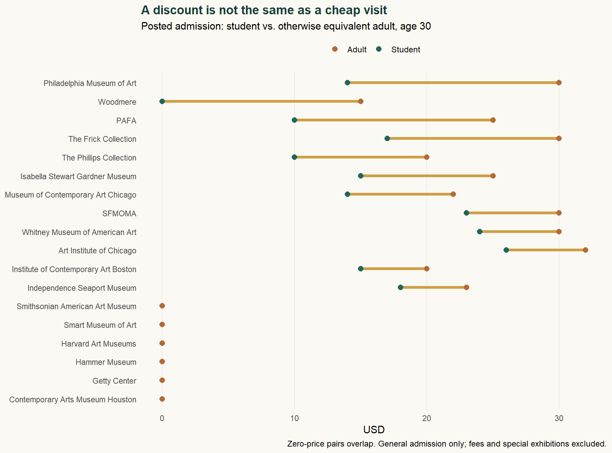

| Region | Cities | Museums | Mean saving per city |
|---|---|---|---|
| Midwest | 1 | 3 | $4.67 |
| Northeast | 3 | 9 | $9.08 |
| South | 2 | 3 | $2.50 |
| West | 2 | 3 | $3.50 |
What Is Your Student ID Worth?
A museum price check across eight U.S. cities
web scraping
student life
data analysis
Blog 2 · Eighteen museums, eight cities, and one surprising distinction: the biggest student discount is not always the cheapest visit.
BLOG 2 · DATA IN EVERYDAY LIFE
A student ID can cut a museum bill. But sometimes the best ticket is free for everyone.
18 museums · 8 cities · 4 Census regions · September 21, 2026 snapshot
One card, two questions
Planning a museum weekend raises a familiar student-budget question: how far can an ID card stretch? Starting in Philadelphia, I expanded the search to New York, Boston, Chicago, Washington, San Francisco, Los Angeles, and Houston. I wanted to distinguish where student status saves the most from where admission costs the least. Those questions sound interchangeable. They are not.
Building a comparable ticket
I screened 30 institutions and retained 18 with extractable, comparable prices across 8 cities. This is a convenience sample, mostly art museums, not a representative survey. One institution contributes one observation; multiple buildings and repeated daily price tables do not become extra museums.
The baseline compares a 30-year-old, nonresident, full-time college student with valid ID against an otherwise equivalent nonstudent. Age 30 separates student status from youth eligibility; a second view uses age 22. Penn-specific partnerships, resident discounts, memberships, transportation, parking, booking fees, and separately ticketed exhibitions are excluded. Results describe posted general-admission prices, not a complete travel budget.
Student-ID saving = comparable adult price − student price.
Using R’s rvest, I parsed cached official HTML with read_html(), html_elements(), and html_text2(). Site-specific category patterns distinguish student tickets from parking charges and nonresident rates from local offers. Missing categories stop the analysis; missing prices never become zero. Short evidence extracts, source URLs, collection logs, and scripts accompany the cleaned data.
Requests were spaced and cached. Access refusals, rate limits, robot exclusions, and challenge pages were not bypassed. Barnes and The Broad were dropped after reviewing restrictive terms. This matters statistically: websites that are easier to read can become overrepresented.
Where the card saves more

Philadelphia leads this sample at $12.75 per museum, compared with $9.50 in New York. Visiting all four sampled Philadelphia institutions once would cost $42.00 using student rates, versus $93.00 at adult rates. This is a basket calculation, not a one-day itinerary.
Regionally, I average city means so cities with more observations do not automatically receive more weight. The Northeast has the highest observed mean, $9.08. However, the Midwest contains only Chicago; Houston and San Francisco each have one museum. These numbers cannot establish which entire U.S. region offers students the best value.
A larger discount can still mean a larger bill

The Getty Center and Hammer charge neither group for general admission. Their student-ID saving is zero, yet they are inexpensive choices. The Getty requires a timed reservation; Hammer does not require one for individual visits. Free admission does not remove parking costs or guarantee unrestricted access.
Eligibility changes the story too. At the Whitney, visitors 25 and under enter free regardless of enrollment. Switching both comparison groups to age 22 reduces New York’s mean student-ID saving from $9.50 to $6.50. Crediting the entire adult ticket to student status would exaggerate the card’s value.
The MCA Chicago has posted online prices and in-person pay-what-you-can admission. Its listed discount is not a guaranteed reduction in what someone must pay. Excluding MCA gives Chicago a mean saving of $3.00. Restricting the comparison to museums with positive adult prices also changes Boston’s mean from $5.00 to $7.50. The denominator matters.
Plan around eligibility, then the calendar
My practical rule: choose the museums first, check age and student eligibility second, then compare free hours. Woodmere offers free Sundays, while ICA Boston’s free Thursday evenings require advance tickets. These are calendar savings available beyond students. Keep pay-what-you-wish separate from guaranteed free admission, and confirm hours at the official links before traveling.
Explore the admission snapshot
Choose a city and an age scenario. Prices exclude fees; conditions remain visible. “Saving” refers only to student status. These are September 2026 observations, not live ticket quotes.
| Museum / official source | Adult | Student | Saving | Conditions & planning notes |
|---|---|---|---|---|
| Philadelphia Museum of ArtPhiladelphia · fixed | $30.00 | $14.00 | $16.00 | Bring valid student ID; main-building admission.Mon/Thu/Sat/Sun 10–5; Fri 10–8:45; Tue/Wed closed |
| PAFAPhiladelphia · fixed | $25.00 | $10.00 | $15.00 | Daytime rates. Friday 5–8 pm adult admission is discounted; student price unchanged.Thu–Mon 10–5; Fri until 8 |
| WoodmerePhiladelphia · fixed | $15.00 | $0.00 | $15.00 | Student discount at front desk with ID. All visitors free Sundays, excluding events.See official visit page for both halls |
| Independence Seaport MuseumPhiladelphia · fixed | $23.00 | $18.00 | $5.00 | General Admission Package; submarine package excluded.See official hours before travel |
| Whitney Museum of American ArtNew York · fixed | $30.00 | $24.00 | $6.00 | Age 25 and under free for everyone. Advance tickets available; reserve free entry too.Free Fridays 5–10 pm; second Sundays |
| Isabella Stewart Gardner MuseumBoston · fixed | $25.00 | $15.00 | $10.00 | Current college ID; reserve ahead. School-partner promo codes excluded.Check timed-entry availability |
| Harvard Art MuseumsBoston · free | $0.00 | $0.00 | $0.00 | Free for all; check in at Visitor Services.Check current hours; Cambridge/Boston metro |
| Museum of Contemporary Art ChicagoChicago · suggested | $22.00 | $14.00 | $8.00 | Nonresident posted online prices; in-person admission is pay-what-you-can. Not a required minimum.Tue 10–9; Wed–Sun 10–5; Mon closed |
| Art Institute of ChicagoChicago · fixed | $32.00 | $26.00 | $6.00 | First General Admission category, nonresident. Advance tickets encouraged; ticketed special exhibitions extra.Consult current hours before travel |
| Smart Museum of ArtChicago · free | $0.00 | $0.00 | $0.00 | Free to all visitors.Check exhibition schedule before travel |
| The Phillips CollectionWashington DC · fixed | $20.00 | $10.00 | $10.00 | ID required. Third Thursdays 5–8 pm free for all; check ticket availability.Tue–Sun 10–5; Sun public entry from 11 |
| Smithsonian American Art MuseumWashington DC · free | $0.00 | $0.00 | $0.00 | No admission tickets required. Renwick closure noted on site; only SAAM main building represented.Daily 11:30–7 |
| SFMOMASan Francisco · fixed | $30.00 | $23.00 | $7.00 | Full-time student with ID. Ages 18 and younger free.Mon/Tue/Fri–Sun 10–5; Thu noon–8; Wed closed |
| Getty CenterLos Angeles · free | $0.00 | $0.00 | $0.00 | Free admission requires timed-entry reservation. Parking costs excluded.Check reserved arrival time |
| Hammer MuseumLos Angeles · free | $0.00 | $0.00 | $0.00 | No advance reservation needed for individuals; groups of 10+ register.See official gallery hours |
| Contemporary Arts Museum HoustonHouston · free | $0.00 | $0.00 | $0.00 | Free to all; only one Houston museum in the final sample.Check exhibition hours before travel |
| The Frick CollectionNew York · fixed | $30.00 | $17.00 | $13.00 | Timed tickets recommended; student ID. Wednesday online minimum $5; different amounts onsite subject to availability.Wed pay-what-you-wish 1:30–5:30 pm |
| Institute of Contemporary Art BostonBoston · fixed | $20.00 | $15.00 | $5.00 | Free Thursday advance tickets required; age 18 and under free.Thursday free entry 5–9 pm |
Reproduce the analysis
Download the data Download the research bundle View the source on GitHub
The bundle includes an offline R replay, extraction rules, short factual evidence, acquisition code, exclusions, and package versions. Full museum pages and artwork are not republished. Hours and reservation notes are manually reviewed annotations, not outputs of the price parser. The linked README explains the limitations and refresh procedure.
NoteA small, auditable rvest example
Show the R code
rvest::read_html('data/evidence/pma.html') |>
rvest::html_elements('p') |>
rvest::html_text2()[1] "Adults$30" "Students with valid ID$14"This reads the short factual extracts retained from the original page. analyze.R can also parse the original private HTML cache with --raw, using the same category patterns. The public extracts are not presented as full archival copies of the websites.
AI assistance was used for coding, drafting, and checking extraction rules. Prices are grounded in the linked official pages; the limitations above remain part of the result.